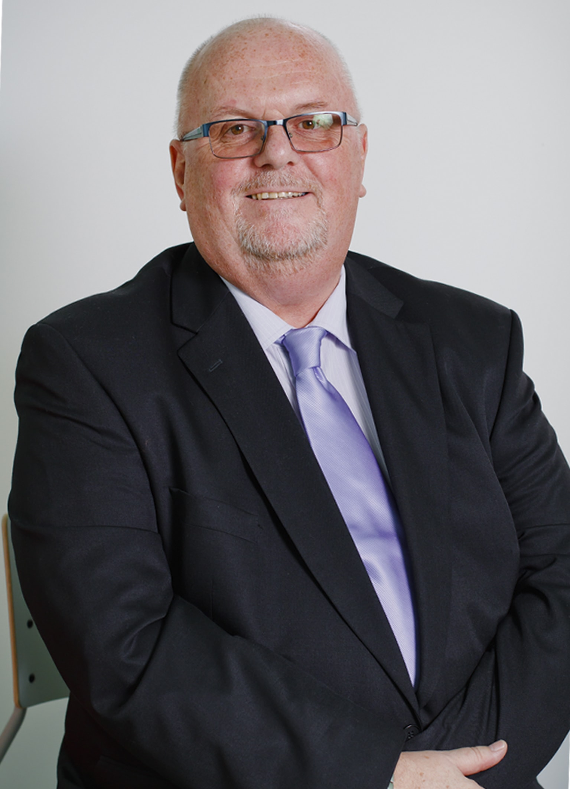

Добро пожаловать в Основную школу Международной школы «Мирас», Нур-Султан!
Основная школа предлагает уникальную образовательную программу, объединяющую требования казахстанских образовательных стандартов и программы Международного Бакалавриата (Программа основной школы (MYP) и Дипломная программа (DP)).
Инновационная учебная программа позволяет студентам развивать творческие способности, формировать активную гражданскую позицию, основы здорового образа жизни и быть честными.
Наши студенты принимают активное участие в различных видах деятельности по служению обществу и созданию проектов, способствующих развитию их исследовательских навыков.
Студенты могут изучать ряд предметов на английском и русском языках, все казахстанские студенты изучают казахский язык. Школа также привержена поддержке родного языка наших студентов.
В старшей школе студенты смогут выбрать обучение по Дипломной программе (11–12 классы) и изучать предметы на английском языке (исключение составляет изучение иностранного языка).
Мы стремимся, чтобы наши студенты развивали свой потенциал и лидерские качества, умели заботиться об окружающих, как в местном, так и в глобальном масштабе.
Многие наши выпускники продолжают свое обучение за границей и у нас сложились крепкие связи с университетами не только в Казахстане, но и в Канаде, США, Великобритании и Швейцарии.
Международная школа «Мирас», Нур-Султан — это динамичная, дружелюбная школа, и я очень рад вернуться сюда и работать с коллективом, который ставит в приоритет благополучие и высокие достижения студентов.